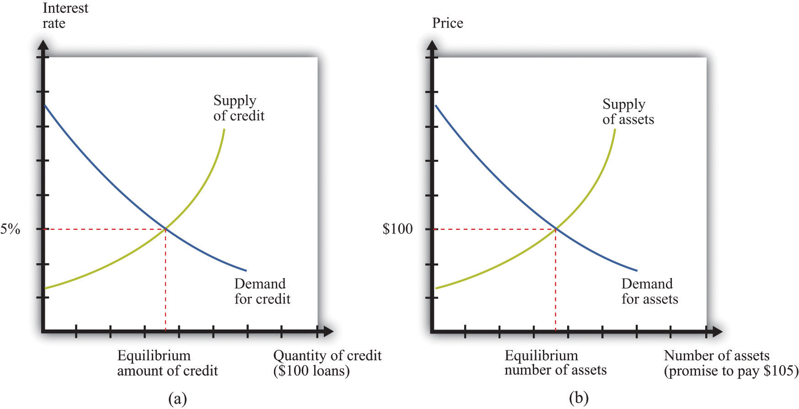
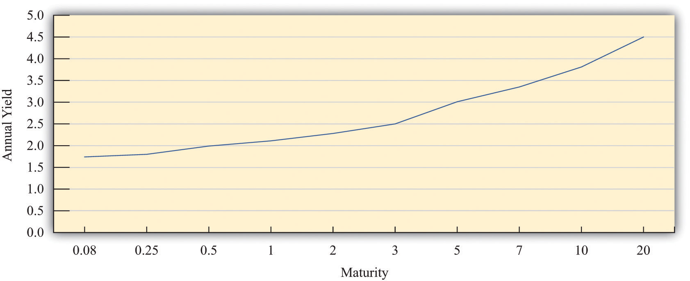

After you have read this section, you should be able to answer the following questions:
We have now discussed how you could use your $100 to buy goods and services or the money of another country. You can also use your money to buy money in the future. When we say this, we are simply describing a familiar transaction in an unfamiliar way: we are talking about saving. If you put money in a bank, then you are buying money in the future with money you give up today. When you save in this way, you become a participant in the credit markets (or loan markets)A market that brings together suppliers of credit, such as households who are saving, and demanders of credit, such as businesses and households who need to borrow..
Toolkit: Section 31.24 "The Credit (Loan) Market (Macro)"
A credit market (or loan market) brings together suppliers of credit, such as households who are saving, and demanders of credit, such as businesses and households who need to borrow. You can review the credit market in the toolkit.
Suppose you do not want to spend your $100 until next year. You could just put the money under your mattress, but a better option is to find some way of getting more than $100 next year. One way to do this is to lend your money to someone else. For you, this might simply mean taking it to your bank and putting it in your savings account. When you do that, you are making a loan to the bank. Of course, the bank probably will not leave the money in its vault; it will lend that money to someone else. Banks and other financial institutions act as intermediaries between those who want to save and those who want to borrow.
Figure 24.9 The Credit Market and the Asset Market
Credit markets and asset markets are two ways of looking at the same market: the market for $100 loans (a) with an equilibrium interest rate of 5 percent is the same as the market for an asset that promises to pay $105 in a year’s time (b).
The credit market brings together the suppliers and demanders of credit, and the nominal interest rateThe number of additional dollars that must be repaid for every dollar that is borrowed. is the price that brings demand and supply into balance. The supply of credit increases as the interest rate increases: as the return on saving increases, households will generally save more and thus supply more funds to the credit market. The demand for credit decreases as the interest rate increases: when it is expensive to borrow, households and firms will borrow less. At the equilibrium interest rate, the quantity of credit supplied and the quantity of credit demanded are equal. This is shown in part (a) of Figure 24.9 "The Credit Market and the Asset Market".
There is another way to look at credit markets. Borrowers get money today in exchange for a promise to pay money later. Lenders purchase those promises by giving up money today. Instead of asking how much the interest rate is for a given $100 loan, we could ask what people would be willing to pay today for the right to receive $105 in a year’s time.
The market for the promise to pay $105 in a year is illustrated in part (b) of Figure 24.9 "The Credit Market and the Asset Market". The units on the horizontal axis are $105 payments. These are assets: buyers are purchasing a piece of paper that is a promise to deliver $105 in a year’s time. The price on the vertical axis is the current price of that asset.
The nominal rate of return on an asset is the amount that you obtain, in percentage terms, from holding the asset for a year. In the case of the simple one-year asset we are considering, the return is given as follows:
We can also rearrange this to give us the price of the asset:
Notice what happens when we look at the market in this way. Buyers have become sellers, and sellers have become buyers. Borrowers are sellers: they sell the promise to pay. Lenders are buyers: they purchase the promise to pay. If we are looking at the same group of buyers and sellers as before, then the current equilibrium price of this asset would be $100.
The nominal interest rate and the nominal rate of return defined through these two markets must be the same. If not, there would be an arbitrage possibility. Imagine, for example, that the interest rate is 5 percent but the price of the asset is $90. In this case, the rate of the return on asset is which is 22.2 percent. So you could make a lot of money by borrowing at a 5 percent interest rate and then purchasing the promises to pay $110 at price of $90.
If you could do this, so also could many major financial institutions—except that they would operate on a much larger scale, perhaps buying millions worth of assets and borrowing a lot in credit markets. So the demand for credit would shift outward, as would the demand for assets. This would cause the interest rate to increase and the asset price to increase, so the rate of return on the asset decreases. This would continue until the arbitrage opportunity disappeared.
In summary, we would say there is no arbitrage opportunity when the
nominal rate of return on asset = nominal interest rate.The rate of return on the asset, in other words, is equivalent to the interest rate on the asset. Equivalently this means that
In the second line we replaced (1 + nominal interest rate) with the nominal interest factorA factor, equal to 1 + the nominal interest rate, used to convert dollars today into dollars next year.. The two are equivalent, but sometimes we find it more convenient to work with interest factors rather than interest rates.
The argument that we have just made should seem familiar. It is analogous to the argument for why there cannot be distinct dollar-euro and euro-dollar markets; they are just ways of looking at the same asset. Likewise, we can think of the sale of any asset as equivalent to borrowing, while for any example of credit we can also think of there being an underlying asset.
Very often economists and others talk about “the” interest rate, as if there were just a single asset in the economy. In fact, there are many different assets that you could buy with your $100, each with an associated interest rate. The following are various assets that you might purchase:
We could list many more assets, but you should be getting the general idea. Most of these assets are more complicated than the simple one-year credit contract with which we began. For one thing, they often involve a whole stream of repayments at different dates, rather than just one repayment. For another, the amounts of these payments may be uncertain.
In Section 24.1 "What Is Money?", we pointed to the different characteristics and functions of money. For most of us, the word money conjures up images of currency and coins. But some of the other assets that we listed also can perform more or less well as money. For example, bank deposits in a checking account or with a linked debit card are portable, durable, divisible, and widely acceptable and serve as a medium of exchange. In general, any asset that performs the functions of money is money. Gold can be used as a store of value and perhaps also as a unit of account, but it is not often used as a medium of exchange. There are many different assets in the world, and they vary in the extent to which they perform these different functions and thus how good they are as money.
We just observed that there are many different assets and thus many interest rates in the economy. But these interest rates are all linked to each other because the same people (particularly banks and other financial institutions) trade in many different markets.
One way in which assets differ is in terms of their maturityThe time when the final payment on a loan is due.. To see how the returns on assets of different maturity are linked, consider two government bonds of different maturities: one-year bonds and two-year bonds. Here are two different ways you could save for two years.
There are three interest rates relevant to your choice. The first one is the current interest rate on a one-year bond. The second is the interest rate on a one-year bond next year. The third interest rate is the annualized nominal interest rate on a two-year government bond. An annualized interest rateThe interest rate earned each year on a loan that lasts many years. is the interest rate earned each year on a loan that lasts many years, and the annualized interest factor is (1 + the annualized interest rate). For example, suppose that the annualized rate on a two-year loan is 6 percent. Then you would earn 6 percent per year for two years, and
repayment after two years = $100 × 1.06 × 1.06 = $112.36.As you might expect, these three interest rates are connected, and we can understand how by again thinking about arbitrage. If you purchase the two-year government bond return, you get
100 × (annualized nominal interest factor on two-year bond)2.Conversely, if you purchase the two one-year bonds, you get
100 × (nominal interest factor this year) × (expected nominal interest factor next year).Notice that we have referred to next year’s interest factor as “expected.” This is because when you make your decision, you do not know what the interest rate will be.
When
(annualized nominal interest factor on two-year bond)2 = nominal interest factor this year× expected nominal interest factor next year,the two transactions have the same return. Once again, we can appeal to an arbitrage argument to say that we expect this equation to hold. There is one twist, however. When you make this decision, you do not know for sure what the interest rate will be on one-year bonds next year. You have to make a guess. Thus this arbitrage involves some risk.
This relationship is an example of the term structure of interest ratesThe relationship between the actual and expected returns on assets, which are identical except for their maturities., which describes the relationship between the actual and expected returns on assets that are identical except for their maturities. A version of the relationship applies to not only assets of one-year and two-year maturity but also assets of all maturities.
From the term structure of interest rates, we learn something very significant: if the annual one-year interest rate is below the annual rate on a two-year loan, then interest rates are expected to increase in the future. For example, if the annual one-year interest rate is 5 percent and the annual rate on two-year loans is 6 percent, this means both borrowers and lenders expect one-year interest rates to be higher than 6 percent next year. (If desired, you can calculate exactly what the expected rate is by using the previous equation.)
We can see the connection between assets of different maturities by looking at the yield curveThe current annual return for assets of different maturities..For more details and additional graphs, see J. Huston McCulloch, “The US Real Term Structure of Interest Rates: With Implicit Inflation Premium,” updated October 30, 2009, accessed August 22, 2011, http://www.econ.ohio-state.edu/jhm/ts/ts.html. The yield curve shows the current annual return for assets of different maturities. Figure 24.10 "The Yield Curve" shows the yield curve for US Treasury securities in 2011.This is an average of rates in 2011 for US Treasury securities of different maturities from http://www.econstats.com/r/rusa_ew6.htm. On the horizontal axis of the yield curve is the number of years to maturity of the asset. On the vertical axis is the current annual yield on the asset. Notice that the yield curve is upward sloping: the longer the maturity, the higher the annual interest rate. This is generally what we observe, although sometimes the yield curve is inverted, meaning that higher maturity debt has a lower interest rate.
Figure 24.10 The Yield Curve
All assets are linked, not just government bonds of different maturities. Suppose that the interest rate on one-year government bonds increases. To buy these bonds, financial institutions will start selling other assets—not only bonds at other maturities but also stocks, holdings of foreign currencies, and so on. As they sell those other assets, their prices will decrease, and their rate of return will increase. An increase in the interest rate on one-year treasuries therefore increases interest rates on other assets. Thus different interest rates typically move together, and it is usually not too misleading, at least for the purposes of macroeconomics, to think about there being a single interest rate in an economy.
The exchanges we have described so far have all been in terms of dollars. The interest rates paid on such exchanges are nominal interest rates. In a world where prices are increasing, however, the nominal interest rate does not represent the true cost of borrowing and lending.
To see why, begin by recalling that the inflation rate is defined as the percentage change in the price level. This means that the price level next year is equal to the price this year multiplied by (1 + inflation rate).If this is not clear to you, write out the inflation rate as follows:Then add one to both sides and multiply by the price level this year. Now imagine that two individuals, Bert and Ernie, want to write a credit contract. Bert wants to borrow some money to buy a pizza. The price of a pizza this year is $10, so Ernie lends Bert $10, and they agree on a nominal interest rate for this credit arrangement. This means that next year he will repay $10 × (1 + nominal interest rate).
We could also imagine that Bert and Ernie decide to write a different kind of contract to guarantee a return in terms of pizzas. Because this rate of return is specified in terms of goods rather than money, it is a real interest rateThe rate of return specified in terms of goods, not money.. Ernie agrees to give Bert (enough dollars to buy) 1 pizza this year in return for being repaid (enough dollars to buy) (1 + real interest rate) pizzas next year. Ernie lends Bert $10 as before (the equivalent of 1 pizza). To repay this loan next year, Bert must give Ernie enough money to buy (1 + real interest rate) pizzas. The price of a pizza has increased to $10 × (1 + inflation rate), so Bert must give Ernie $10 × (1 + real interest rate) × (1 + inflation rate).
If you have worked through this chapter carefully, you probably know what is coming next. Because of arbitrage, we know that these two contracts must be equivalent:
1 + nominal interest rate = (1 + real interest rate) × (1 + inflation rate).As an approximation, this equation implies that theTo see this, multiply out the right-hand side and subtract $1 from each side to obtain nominal interest rate = real interest rate + inflation rate + real interest rate × inflation rate. Now, if the real interest rate and the inflation rate are small numbers, then when we multiply them together, we get a very small number that can be safely ignored. For example, if the real interest rate is 0.02 and the inflation rate is 0.03, then their product is 0.0006, and our approximation is about 99 percent accurate.
nominal interest rate ≈ real interest rate + inflation rate.This relationship is called the Fisher equationA formula for converting from nominal interest rates to real interest rates: the real interest rate equals the nominal interest rate minus the inflation rate..
Toolkit: Section 31.8 "Correcting for Inflation"
Nominal interest rates and real interest rates are related by the Fisher equation. To convert from nominal interest rates to real interest rates, we use the following formula:
real interest rate ≈ nominal interest rate − inflation rate.If you want to know more about the Fisher equation, you can look in the toolkit.
For example, if a loan has a 12 percent interest rate and the inflation rate is 8 percent, then the real return on that loan is 4 percent. Since the nominal interest rate and the inflation rate are easily observed by most of us, we can use the Fisher equation to calculate the real rate of interest. We use the Fisher equation whenever we see a nominal interest rate and wish to convert it to a real interest rate. Just as it is the real exchange rate that matters for people trading goods and assets between countries, so it is the real interest rate that ultimately matters to borrowers and lenders in the economy.
In macroeconomics, we often look at the credit market for the entire economy, where savings and investment are matched in the economy as a whole. The price in this market is the real interest rate. The response of savings and investment to the real interest rate is shown in Figure 24.11 "The Credit Market". Once we know the equilibrium real interest rate, we calculate the implied nominal interest rate using the Fisher equation.
Figure 24.11 The Credit Market

Adjustment of the real interest rate ensures that the flows in and out of the financial sector balance.
The (net) supply of loans in the domestic credit market comes from three different sources:
Households will generally respond to an increase in the real interest rate by reducing current consumption relative to future consumption. Households that are saving will save more; households that are borrowing will borrow less. Higher interest rates also encourage foreigners to send funds to the domestic economy. Government saving or borrowing is little affected by interest rates.
National savingsThe sum of private and government savings. are defined as private savings plus government savings (or, equivalently, private saving minus the government deficitThe difference between government outlays and revenues.). The total supply of savings is therefore equal to national savings plus the savings of foreigners (that is, borrowing from other countries). The matching of savings and investment in the aggregate economy is described as follows:
investment = national savings + borrowing from other countries or investment = national savings − lending to other countries.This is the same thing as saying that the flows in and out of the financial sector in the circular flow must balance.
The demand for loans comes from firms who borrow to finance investment. As the real interest rate increases, investment spending decreases. For firms, a high interest rate represents a high cost of funding investment expenditures. This is evident if the firm borrows to purchase capital. It is also true if the firm uses internal funds (retained earnings) to finance investment since the firm could always put those funds in an interest-bearing asset instead.
Toolkit: Section 31.27 "The Circular Flow of Income"
The toolkit provides more detail on the flows in and out of the financial sector.
If you are like most people, you do not own assets in another country. You may own multiple assets—a savings account that pays you some interest every month, perhaps a certificate of deposit, or shares of some company—but the chances are that all your financial assets are denominated in a single currency. In fact, there is no reason why you should not own assets denominated in other currencies, such as euros, or pesos, or British pounds. You might consider opening a bank account in another country. Or you might even consider other financial investments in another country, such as purchasing a share in an international mutual fund, buying shares of a foreign company, or buying the debt of a foreign government.
Most of us do not know exactly how to go about making such investments. In fact, they are easy to carry out if you make use of the services of professional financial advisers. In any case, we are not really interested in the mechanics of foreign investment here. We want to answer a more fundamental question: how do you know if buying foreign assets would be a good idea? Consider the choice between two investment strategies.
Investing in the United States
Investing in Europe
To decide which is the better strategy, you need to determine how much you will earn in each case.
It is straightforward to determine how much you will get with the first option: you will get your $100 plus the interest payments. For example, if the interest rate at the US bank is 10 percent, then after a year you will earn $10 interest for a total of $110.
What about the second strategy? How many dollars will you have if you deposit money in the European bank? This is a bit more complicated. First, you buy euros with your $100. Second, you deposit these euros in a European bank and earn interest. Third, at the end of the year, you withdraw your euros from the bank and sell them for dollars. For example, suppose that the current dollar price of euros is $1.25 and the interest rate paid on deposits in Europe is 5 percent. Suppose you also expect that the price of a dollar in euros will be EUR 0.70 in a year’s time. With the second investment strategy,
The second strategy therefore earns you more than the first strategy. It would be better to invest in Europe compared to the United States. Moreover, a slight variation on this strategy seems like it is a money machine. Consider the following.
Using the same interest rates and exchange rates as previously, this transaction works as follows: you borrow $100, obtain $120 at the end of the year, pay back $110 to the bank, and end up with $10 profit.
To evaluate this arbitrage possibility, you need to know (1) the current dollar price of euros, (2) the annual return on deposits in Europe, and (3) the price of a dollar in euros a year from now. Look carefully at the language we used. You need to know “the euro price of dollars a year from now.” But when we went through the example, we said “you expect that the price of dollar in euros will be EUR 0.70 in a year’s time.” As with the term structure of interest rates, there is some risk involved here. You cannot know the future exchange rate with certainty. This strategy entails a gamble about the future exchange rate. Still, if everyone has the same guess about the future exchange rate as you do, then such a situation could not last. Everyone would pursue the same strategy: borrow in the United States, buy euros, invest in Europe, and convert back in a year’s time. What would happen?
These forces would all tend to eliminate the profit opportunity.
So when do we expect this arbitrage opportunity to disappear? It disappears when investors expect to make the same profit whether they invest in Europe or the United States. The condition for this is as follows:
The left side is the return on investing in the United States. The terms on the right give the return on investing in Europe. When this condition holds, the returns on deposits in US and European banks are the same. This condition is called uncovered interest parityA relationship between interest rates in two countries and the expected change in the exchange rate that holds when the return earned by investing in assets denominated in different currencies are equal..
Because we do not know the price of euros next year for sure, this equation does not hold exactly when we look at actual data from the past. That is, the actual exchange rates combined with the actual returns on deposits do not quite satisfy this equation. This does not contradict the theory. Hindsight is perfect. The important point is that if people hold similar beliefs, then uncovered interest parity will hold ahead of time.
We can rearrange the uncovered interest parity condition as follows:
Written this way, the equation tells us that beliefs matter. Suppose everyone in the market believes that the dollar will depreciate relative to the euro in the future: that is, everyone expects a decrease in the euro price of the dollar. This makes investment in euro-denominated assets a better deal since we will get a lot of dollars per euro in the future. Investors will respond by selling dollars now to buy euros. This increase in the supply of dollars will cause the current euro price of dollars to decrease.
Thus we see that if everyone expects the euro price of dollars to decrease in the future, then the euro price of dollars will decrease today. When we talk about the market for currencies, demand and supply today depend on what households and firms think about the future exchange rate.
We can also rearrange the equation to see what it tells us about exchange rate beliefs:
If the interest rate in Europe is greater than the interest rate in the United States, then the condition tells us that investors must be expecting the dollar to appreciate.